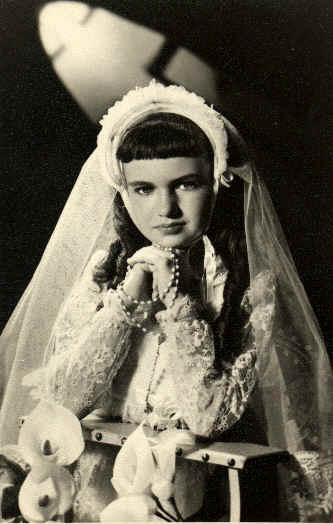
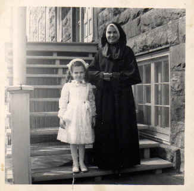

EN VISITE AU COUVENT DE GHISLAINE


EN VISITE AU COUVENT DE GHISLAINE
JACQUELINE LUCIE GHISLAINE MARIE-ANNA CARON
NICOLE MICHEL ANDRÉ. CHRISTIANE
FRANCINE
LES 2 PHOTOS CI-DESSUS ONT ÉTÉ PRISES EN 1954 LORS DE LA PREMIÈRE COMMUNION OFFICIELLE DE NICOLE. EN RÉALITÉ, NICOLE AVAIT COMMUNIÉ POUR LA PREMIÈRE FOIS L'ANNÉE PRÉCÉDENTE MAIS, ÉTANT ALORS PENSIONNAIRE, AUCUNE CÉRÉMONIE N'AVAIT EU LIEU. QUANT À LA PHOTO OFFICIELLE DU HAUT, ELLE A ÉTÉ PRISE EN 1955 OU 1956, EN MÊME TEMPS QUE CELLE D'ANDRÉ.
NICOLE NÉE EN 1947 EST LA FILLE DE GÉRARD CHARETTE ET DE JACQUELINE CONSIGNY. ELLE ÉPOUSE ROBERT GRISÉ EN 1968.